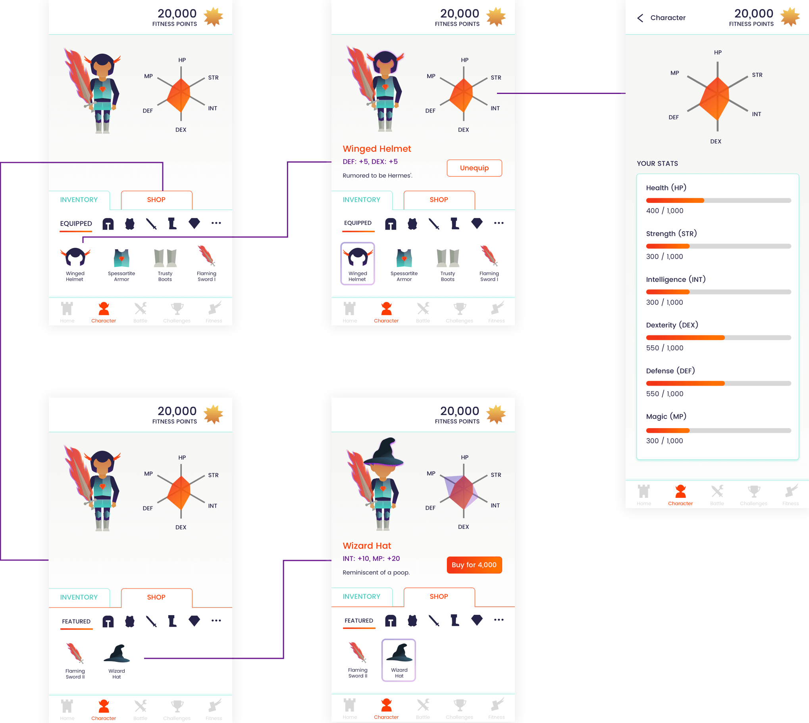

Our team's goal was to come up with a feasible product pitch within 10 weeks in our Product Management class. Given that we were all new to product management, being primarily engineers and designers, this was a daunting challenge.
Our team envisioned a product that could combine the fun of RPGs with fitness tracking. Gamification could be a motivator for getting into fitness.
As the chief user experience designer, my focus was creating a first pass at a cohesive app experience that demonstrated the value that our concept could bring to users.
Track & Slash, the fitness RPG that makes slashing through your calories fun! Earn points for your fitness to spend on customizing your character's appearance and abilities. Use your hard earned abilities to face off against your friends in battles!
At the end of 10 weeks, we pitched our product to our class and a panel of product managers. We won first place for Panel's Choice and second place for People's Choice out of ten projects!

We first defined the target user for our fitness app, coming up with personas to help us characterize the people we envisioned gaining value from Track & Slash.
THOMAS - FITNESS NEWBIE
Thomas is a realtor living in New York City. He is 24 years old and has been working in real estate. He avidly enjoys playing World of Warcraft, but he noticed that he's been gaining some weight. He has tried to go to the gym a few times in the last year, but got discouraged from the lack of results. His friends are not into fitness and he doesn't own a Fitbit so getting into fitness is pretty difficult.
AMY - CASUAL FITNESS
Amy is a 27 year old wedding planner in Dallas, Texas. She has an iPhone 7 and a Fitbit which helps her keep track of her steps, but she doesn't go running or to the gym. She's been meaning to exercise more and be healthier so she can have more energy for her job, but it's difficult for her to schedule gym time in with her busy schedule. She does enjoy weekend soccer games with her friends, but she wants to figure out other ways of having fun while getting fit.
BOBBY - ACTIVELY FIT
Bobby is a 30 year old Project Manager working at Google in Mountain View. He has been going to the Google gym before he sits down at his desk every day for quite some time and uses his Fitbit and Moto X 6 to track his routine. He is pretty fit, but lately he has been plateauing in his day-to-day exercise routine. He is looking for something new he can do or use to stay fit, such as maybe competing with his co-workers at being fit.
By keeping these personas in mind, we were able to break the overall problem down into several smaller problems.
For our primary sprint, we created a clickable prototype to test on seven people in their early twenties. We decided to focus on developing the character customization flow, as this was the primary feature that brought the fitness and roleplaying aspects together in the app. Some of our initial decisions are documented below.
How do we integrate fitness and RPG?
As we were targeting people who have difficulties with being fit, we hypothesized that the RPG character would be important as a motivator. We therefore kept the character central to the homepage.
How does real-life fitness translate to in-game character ability?
Fitness points buy items that imbue the character with abilities. Therefore character items became a natural bridge between fitness points, character abilities, and character stats. This streamlined how users could use their fitness points, keeping the game lightweight and appropriate for a mobile platform. One of the benefits of this system was that even those who may not be as fit as others in real life would be able to battle on 'equal ground.' Given that lack of natural ability is often a deterrant for fitness, we didn't want our app replicating that.
After talking to people, we implemented feedback into a higher fidelity clickable prototype.
This aspect of the app encourages social motivations to keep fit.
Personal fitness challenges encourage retention and improvement
As the lead UI/UX designer on the team, I created all the visual assets and screens. I also put together a high fidelity prototype to present as a demo.
User Flow - Home

User Flow - Character Inventory & Shop 
User Flow - Battle

User Flow - Challenges & Fitness Points

My goal for branding Track & Slash was to create something fun, playful, and high energy. I drew inspiration from games such as Orisinal, Two Dots, and Journey.